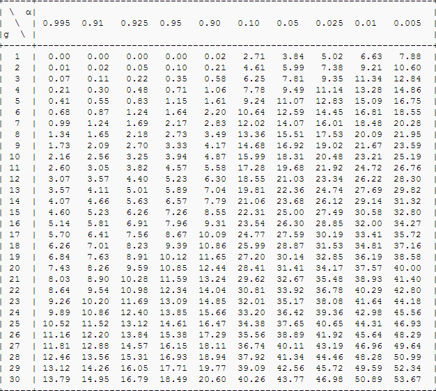

a=0.995 a=0.91 a=0.925 a=0.95 a=0.90 a=0.10 a=0.05 a=0.025 a=0.01 a=0.005
g=1 0.00 0.00 0.00 0.00 0.02 2.71 3.84 5.02 6.63 7.88
g=2 0.01 0.02 0.05 0.10 0.21 4.61 5.99 7.38 9.21 10.60
g=3 0.07 0.11 0.22 0.35 0.58 6.25 7.81 9.35 11.34 12.84
g=4 0.21 0.30 0.48 0.71 1.06 7.78 9.49 11.14 13.28 14.86
g=5 0.41 0.55 0.83 1.15 1.61 9.24 11.07 12.83 15.09 16.75
g=6 0.68 0.87 1.24 1.64 2.20 10.64 12.59 14.45 16.81 18.55
g=7 0.99 1.24 1.69 2.17 2.83 12.02 14.07 16.01 18.48 20.28
g=8 1.34 1.65 2.18 2.73 3.49 13.36 15.51 17.53 20.09 21.95
function poisson(x, λ, f=4) {
let p = Math.exp(-λ)
for (let k=1; k<=x; k++) p = p*λ/k
return p.toFixed(f)
}
function doTable() {
let head = a => ' '+ a.join(' ')
const L = [0.5, 1, 1.5, 2, 2.5, 3]
let b = [head(L.map((λ) => 'λ='+λ))]
for (let x=0; x<=8; x++) {
let a = L.map(λ => poisson(x, λ))
b.push('x='+x+' '+ a.join(' '))
}
return b.join('\n')
}
 Ref: Ki Kare Tekniği